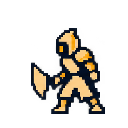
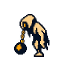
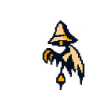
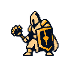
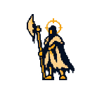
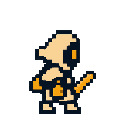

종으로 향하는 길,
성문 앞에 도착하는 순간.
새 몬스터 10종을 스테이지 1~20에 배치한 검토용 미리보기입니다. 개별 모션과 배경 위의 크기·발 위치를 확인할 수 있습니다. 인게임 적용은 확인 후 진행합니다.
소리 미리보기 · 공격음 / 낮은 종 / 배경음악
처음 게임을 시작할 때 자동으로 나오는 글입니다. 이 미리보기에서는 재생 버튼으로 시작합니다.
프롤로그 전문 읽기
“다음으로 이동” 또는 “5 · 검문소”로 처음 도착하면 이동을 멈추고 중앙 안내 패널을 띄웁니다. 확인 한 번으로 전투가 시작됩니다. 슬라이더로 각 스테이지의 몬스터를 바로 확인할 수 있습니다. 미리보기의 완료 상태는 이 페이지를 새로 열면 초기화됩니다.
1~9에는 성문이 보이지 않습니다. 9 → 10 이동 때 바닥에 세워진 성문이 오른쪽에서 들어옵니다. 10 → 11에서는 성문이 왼쪽으로 넘어갑니다. 11 → 12에서는 성문이 왼쪽 화면 밖으로 빠집니다. 11~20은 확장 구간의 배치 확인이며 실제 프로토타입은 10에서 끝납니다.
최초 도달에 안내 한 번, 확인하면 바로 전투입니다. 이 미리보기는 확인 뒤 단발과 2연타가 섞이는 흐름을 보여줍니다. 실제 HP·보상·저장 계산은 하지 않습니다.
유지하는 전투 박자
예고당 0·240·480ms, 단발 720ms 타격. 2연타 예시: 하단 0·240·480 → 상단 720·960·1200 → 타격 1440·1920ms. 일반 160ms / 완벽 60ms / 재사용 260ms.
1~20 동선과 5스테이지 안내에 신규 몬스터를 연결했습니다. 공격·기절과 흰색 피격을 배경 위에서 확인하세요. 중앙 패널은 확인 버튼으로 닫을 수 있으며, 아래 모션 갤러리에서 모든 동작을 따로 살펴볼 수 있습니다.
인게임의 기존 몬스터 5종
외형과 대기·공격·기절 모션, 원래 스테이지 배치를 유지합니다. 피격은 흰색 점멸로 처리하며 별도 사망 모션은 사용하지 않습니다.





신규 몬스터 10종 후보 보기 · 인게임 미적용
신규 몬스터 후보 · 인게임 미적용
기존 몬스터는 그대로 사용합니다. 아래 새 디자인은 교체가 확정되지 않은 후보입니다. 크림색과 금색 면, 짙은 남색 외곽, 굵은 사슬로 다시 정리했습니다.

128×128 기본 셀과 기존 발 기준점 / 크림·금색·남색 중심의 큰 도트 면 / 단순한 무기와 준비 자세 / 작은 장식 생략. 아래는 외형 검토 시안이며 게임용 완성 스프라이트는 아닙니다.
성문 밖 · 추가 몬스터 후보

1 빗장 초병 / 2 종추 사냥개 / 3 금 간 검기사 / 4 검문쇠 거인 / 5 성문 가디언. 숫자는 디자인 번호이며 스테이지 번호가 아닙니다.
성문 안 · 11~20스테이지 확장 기획

6 문패 꼭두각시 / 7 배수로 갈고리개 / 8 사슬 무희 / 9 수문 추지기 / 10 매달린 집행관. AI 콘셉트 시트이며 완성 스프라이트·애니메이션이 아닙니다.
이전의 세밀한 콘셉트와 비교


1~20 배치
| Stage | 장소 / 적 | 배경 연결 |
|---|
공격·피격·기절 미리보기
기존 5종은 그대로 유지합니다. 선택 항목은 공격 하나·피격·기절 세 가지입니다. 대기 애니메이션 없이 기본 이미지로 서 있습니다. 피격은 현재 자세에서 45ms 하얗게 유지한 뒤 75ms에 걸쳐 원래 색으로 돌아옵니다. 사망 모션은 사용하지 않습니다. 신규 10종의 새 공격·기절 모션을 연결했습니다. hook_hound는 공격 중 떠 있던 발 위치를 보정했습니다. 11~20 구간의 몬스터는 확장용 아트이며 프로토타입은 10스테이지에서 끝납니다.
이 화면은 동작별 프레임 유지 시간을 그대로 재생합니다. 반복을 켜면 공격 사이에 400ms 쉽니다. 전투에서는 유니티가 공격 예고·명중·복귀 시각에 맞춰 해당 프레임을 재생하고 파티클을 더합니다.